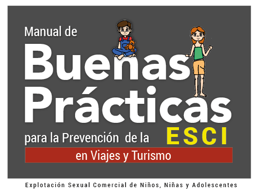
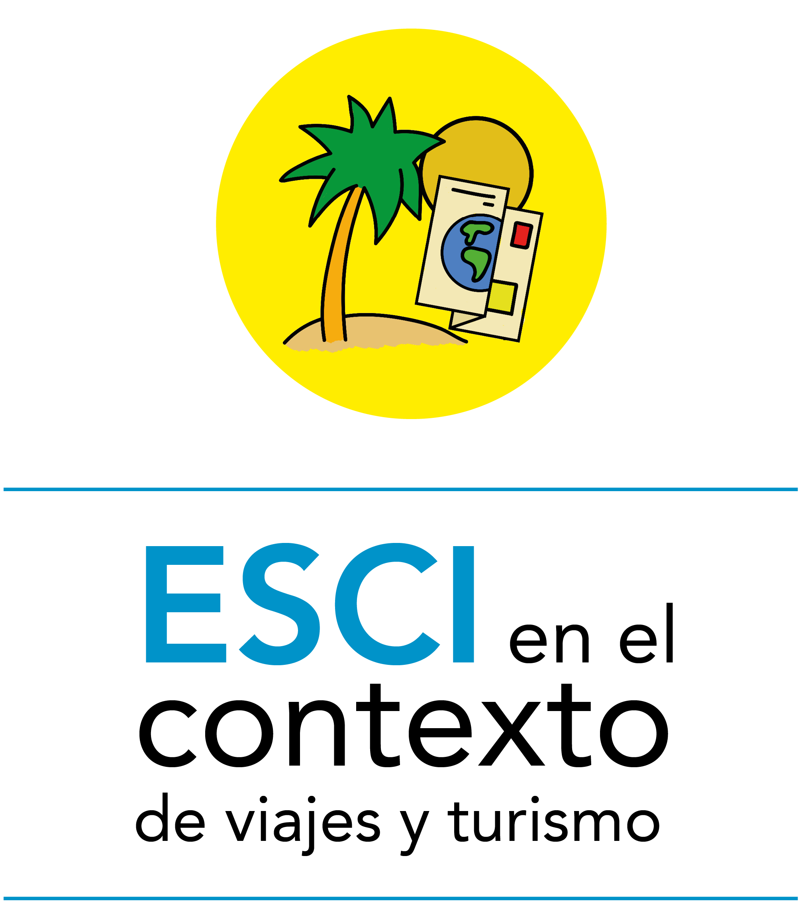

Es usar o facilitar el uso sexual o erótico de niñas, niños y adolescentes (NNA) a cambio de algún tipo de pago o beneficio.
Es la explotacion de un adulto contra un niño, niña o adolescente, menor de 18 años, acompañada por el pago en efectivo o
en especie a un tercero o terceros.
Uso sexual es todo tipo de actividades y tocamientos directo del cuerpo y sus parter íntimas o utilizarles en total desnudez
o con poca ropa en fotografías y espectáculos eróticos o pornográficos.
Continuar Leyendo

INICIO
Conceptos Generales
Explotación Sexual Comercial Infantil
¿Qué es la explotacion sexual comercial infantil - ESCI?
Explotación Sexual Comercial Infantil
Modalidades de la ESCI
Las modalidades de la explotación sexual comercial de NNA, es diversa y generalmente se
presentan de forma relacionada y simultánea. Dentro de ellas podemos mencionar las siguientes:
1. Relaciones sexuales o eróticas remuneradas
2. Pornografía utilizando imágenes de niñas, niños y adolescentes
3. Turismo con fines de explotación sexual comercial infantil
4. Trata de niñas, niños y adolescentes con propósitos de explotación sexual.
Leer completo en el documento (Página 13)
Contexto de la ESCI
Contexto de la ESCI
Situación de la ESCI en Nicaragua
Decíamos anteriormente que es la modalidad en la que los explotadores
sexuales de NNA son quienes viajan de sus países de origen a otro, que por
lo general es menos desarrollado y visto como permisivo, para involucrarse
en actividades sexuales con NNA de forma anónima e impune.
El vínculo entre turismo y explotación sexual comercial infantil
Es preciso reconocer que la ESCI es un fenómeno que se ha extendido
en la actualidad y Nicaragua forma parte de esta lista, esto ha calado en
profundidad en el sector turismo. De hecho, afecta a casi todos los países,
tanto a emisores como a receptores de turistas.
.
Continuar Leyendo
Actores Involucrados en la ESCI
¿Quiénes son las victimas de ESCI?
Niño/a, adolescente. Se entiende por niño/a todo ser humano menor de dieciocho
años de edad, salvo que, en virtud de la ley que le sea aplicable, haya alcanzado antes la mayoría de edad.
Quiénes cometen este delito ¿Quiénes son los transgresores?
Explotador/a.
El cliente-explotador/a
Proxeneta
Intermediario/a
Continuar Leyendo
Causas y Factores que contribuyen al desarrollo de ESCI en el ámbito del turismo
Existen una serie de factores/causas de diversa naturaleza que favorecen,
se produzcan situaciones de ESCI en el ámbito del turismo así como
factores/ consecuencias que genera este delitos donde los más afectados
son las/os NNA. Entre los factores más relevantes están:
Factores socioculturales
Factores familiares
Educación
Factores En NNA
Leer completo en el documento (Página 22)
Consecuencias de la ESCI
Existen una serie de consecuencias de diversa naturaleza que provoca la
ESCI en el ámbito del turismo donde los más afectados son las/os NNA.
Las manifestaciones que pueden presentar un niño o una niña víctima
de ESCI son diversas. Conocer estas consecuencias es muy importante
para que los profesionales del sector turismo cuenten con elementos para
su detección y para una intervención adecuada. Entre los factores más
relevantes están:
Consecuencias físicas
Consecuencias psicológicas
Problemas cognitivos
Problemas de relación
Problemas funcionales
Leer completo en el documento (Página 27)
Mitos y Verdades
La invisibilización del fenómeno de la ESCI perpetúa en la conciencia
social una serie de mitos y excusas que dan la posibilidad que quienes
consumen sexo con NNA, los utilicen para justificar sus actos, lo que hace
que el fenómeno se vea envuelto en una cortina de silencio y excusas que
solamente contribuyen y amparan a los explotadores.
Podemos citar las siguientes excusas:
“No sabía que era menor”
“Ella/él lo necesita y yo la ayudo”
“Hay chavalas/os que aparentan más edad, y con eso te engañan”
“La explotación sexual comercial ocurre solo con NNA del sexo femenino”
“Los y las adolescentes son prostituidos porque les gusta y eligieron
ese trabajo”
“La explotación sexual comercial de NNA sólo ocurre en un ambiente
de extrema pobreza”
“Existen pocos casos de ESCI”
Leer completo en el documento (Página 29)
Preguntas frecuentes sobre ESCI
¿ESCI lo mismo que abuso sexual?
Tanto la ESCI como el abuso sexual son expresiones de violencia sexual
hacia NNA, ambas buscan someter y dominar, vulnerando derechos
fundamentales de las personas.
La ESCI siempre implica un intercambio, tanto en dinero, especias,
protección o cualquier otra cosa, “es por algo”. Este producto no siempre
queda en manos de la persona víctima, sino en manos de sus familiares,
proxenetas o tratantes.
¿Es aún explotación sexual cuando la víctima da su “consentimiento”?
Si, a pesar de dar su consentimiento, el NNA sigue siendo víctima de
ESCI. No hay excusas. El desconocimiento de la edad, la vestimenta o
la apariencia del NNA no son argumentos válidos para justificar estos
comportamientos.
Los responsables de que este fenómeno exista y se siga reproduciendo son
los adultos, bien sea desde la promoción, el consumo o la no reprobación
de la ESCI, Los explotadores no son solamente los proxenetas que someten
a los NNA a la prostitución, sino también cualquier persona que mantenga
relaciones sexuales con NNA. El “consumidor” de sexo pago con NNA el
mal llamado “cliente,” es responsable del delito.
Leer completo en el documento (Página 30)
ESCI en Viajes y Turismo

ESCI en viajes y Turismo
Conceptos generales sobre turismo.
Es una actividad transversal de desarrollo económico para
todos los países, está plenamente comprobado que esta industria
genera importantes ingresos económicos, desarrollo social, intercambio
cultural y mejora de las condiciones de vida e infraestructura de los
destinos turísticos. Sin embargo, la actividad turística como todas
las actividades que el ser humano desarrolla conlleva riesgos y estos
pueden traducirse en delitos, entre los que podemos encontrar la
Explotación Sexual Comercial Infantil.
Cualquier persona que viaja a un lugar diferente al de su
residencia habitual, que se queda por lo menos una noche en el
lugar que visita y cuyo principal motivo de viaje es el ocio, descanso,
ocupación del tiempo libre, peregrinaciones, salud, u otra actividad
diferente en el lugar de destino
Toda persona natural o jurídica
que habitualmente proporcione, intermedie o contrate directa o
indirectamente con el turista, la prestación de los servicios a los que
se refiere la ley y se encuentren inscritos en el Registro Nacional de
Turismo.
Es la actividad turística en equilibrio entre los
ámbitos social, medioambiental, económico y cultural; la práctica
responsable del turismo da como resultado el desarrollo de las
comunidades y su entorno. El Estado promueve mediante programas
y acciones las buenas prácticas del turismo garantizando el desarrollo
integral del país.
Se define como sector por los efectos que genera
a nivel económico, cultural, social, ambiental y político, razón por la
cual requiere de control público en aspectos de legislación, control
monetario, control sanitario, medidas de protección ambiental, control
fiscal, seguridad, garantías a los consumidores (consumo con calidad) y
operatividad, etc.
Contempla dos perspectivas:
1. Es esencial para el desarrollo integral del ser humano, desde el Código Ético Mundial para el Turismo se define como la respuesta del derecho al descanso y al ocio, donde cada persona elige el lugar y la forma de disfrutar sus vacaciones.
2. El turismo fomenta la creación de empresa, promoviendo a su vez el derecho al trabajo. br
1. Es esencial para el desarrollo integral del ser humano, desde el Código Ético Mundial para el Turismo se define como la respuesta del derecho al descanso y al ocio, donde cada persona elige el lugar y la forma de disfrutar sus vacaciones.
2. El turismo fomenta la creación de empresa, promoviendo a su vez el derecho al trabajo. br
ESCI en viajes y Turismo
¿Qué es Turismo con fines de ESCI?
Es la Explotación Sexual cometida contra niños, niñas y adolescentes por personas que viajan de su país de
origen a otro, que generalmente es menos desarrollado y visto con mayor permisividad.
El turismo sexual con fines de ESCI puede darse también a lo interno de un país, lo que implica que lo realizan turistas
nacionales del mismo país desplazándose a lugares turísticos donde realizan la explotación.Estas prácticas pueden
realizarse con una planificación anticipada, o sin previa planificación
haciendo uso de los ofrecimientos realizados por actores de la industria
turística: hoteles, bares, clubes nocturnos, etc. Y que no aplican los códigos
de conducta establecidos por las leyes nacionales e internacionales.
Leer completo en el documento (Página 34)
Factores que facilitan la ESCI
Responsabilidades de los Prestadores de Servicios Turísticos en la Prevención de la ESCI
En 1987 un informe especial presentado por la Organización de las Naciones Unidas, el Informe Brundtland,
también conocido como “Nuestro Futuro Común”, alertó a la comunidad internacional sobre la necesidad de
tomar medidas urgentes para apoyar el desarrollo económico sostenible.
El informe ofrece la siguiente definición de desarrollo del turismo sostenible:
“El desarrollo del Turismo Sostenible responde a las necesidades de los turistas y de las regiones
anfitrionas presentes, a la vez que protege y mejora las oportunidades de futuro. Está enfocado hacia
la gestión de los recursos de manera que satisfagan todas las necesidades económicas, sociales y estéticas,
y que respeten la integridad cultural, los procesos ecológicos esenciales, la diversidad biológica y los
sistemas de soporte de la vida”.
Leer completo en el documento (Página 36)
Acciones de responsabilidad social empresarial (RSE)
La Responsabilidad Social Empresarial es “la conciencia del compromiso y
la acción de mejora continua, medida y consistente, que hace posible a la
empresa ser más competitiva, cumpliendo con las expectativas de todos
sus participantes en particular y de la sociedad en general, respetando la
dignidad de la persona, las comunidades en que opera y su entorno”
Una empresa con responsabilidad social fundamenta su compromiso tanto
a nivel interno como externo dándole transparencia y certidumbre a su
actuación y a sus relaciones:
• Nivel interno de la empresa: Se refiere a los accionistas, los trabajadores
y la gestión de recursos.
• Nivel externo de la empresa: Se refiere a los interlocutores externos,
socios comerciales, los clientes, los consumidores, proveedores, los
interlocutores públicos, autoridades y las Organizaciones de la Sociedad
Civil.
Leer completo en el documento (Página 37)
Prevencion de la ESCI
Prevención de la ESCI
Códigos de conducta internacional, rol de las empresas
Hacia un mayor nivel de compromiso
El movimiento internacional de los últimos años en pos de
la erradicación de la ESCI ha logrado enviar al mundo un mensaje claro:
• No se puede seguir tolerando las violaciones de los derechos de la niñez y la
adolescencia en ningún lugar del mundo.
• Que los NNA de Nicaragua y de cualquier otro lugar del planeta, no están en venta.
Leer completo en el documento (Página 42)
Códigos de conducta local, rol de las empresas
El Código de conducta para la protección de niñas, niños y adolescentes contra la explotación
sexual del sector turístico nicaragüense establece que:
La explotación de seres humanos, en cualquiera de sus formas, especialmente la sexual, y
particularmente cuando afecta a NNA, vulnera los objetivos fundamentales del turismo.
Amparados en instrumentos internacionales como la Convención sobre los Derechos del Niño,
el Convenio 182 sobre la Prohibición de las Peores Formas de Trabajo Infantil OIT, la
Declaración de Estocolmo contra la ESCI, de 1996; el Código Ético Mundial para el Turismo de
la OMT y la Declaración de Yokohama, ambos del 2001; y En cumplimiento de las disposiciones legales
que sustentan la obligación del Estado nicaragüense y de todos sus ciudadanos, de garantizar la
protección y cumplimiento de los derechos de NNA, tales como la Constitución Política de la República,
el Código de la Niñez y la Adolescencia, la Política Pública contra la ESCI de NNA, y otras leyes.
Leer completo en el documento (Página 43)
Prácticas comunes que prestadores de servicios turísticos pueden realizar
“Se entiende por " Prestador de Servicios Turísticos", coda persona natural o jurídica quien de forma
habitual y mediante paga, proporcione, intermedie o contrate con el usuario o turista, la prestación de
los servicios de la industria turística.”
Prácticas de prevención:
Dentro de las políticas organizacionales elabore una dirigida a promover la prevención de la Explotación
Sexual Comercial de Niños, Niñas y Adolescentes pudiendo estas tener como objeto establecer las normas de
comportamiento que el personal de la empresa debe acatar en horas laborales.
El beneficio de realizar la implementación de una política interna de prevención garantiza conductas
responsables, establece medidas para auditorías preventivas en el caso de los procesos de certificación
de normas técnicas de calidad, informa a los funcionarios las medidas adoptadas por la empresa respecto
a la respuesta esperada en situaciones de riesgo y previene de responsabilidades penales a la entidad.
Más prácticas de prevención
Establecimiento de Alojamiento
Entre estos establecimientos están los
Hoteles, hostales, auto hotel, hospedajes o
lugares que presten el servicio de alojamiento.
Prácticas de prevención:
• En el momento en que se realice la reservación o registro, informe cuáles son los documentos que se
requieren para registrar a un menor de edad en el establecimiento de hospedaje.
• No permita el ingreso de ninguna persona a las habitaciones sin hacer el debido registro, mucho menos
cuando se requiera hospedar a un menor de edad.
• En caso de sospecha de Explotación Sexual Comercial de Niños, Niñas y Adolescentes - ESCI - en el
establecimiento, avise oportunamente a la persona encargada de seguridad o contáctese con la línea de
denuncia nacional (113 MIFAN, 118 Policía Nacional)
• Incluir en sus páginas web y redes sociales mensajes alusivos a la prevención y rechazo del turismo
con fines de ESCI.
Más prácticas de prevención
Agencias de viajes y turismo
Se encargan profesionalmente de comercializar planes turísticos. Organizan,
promueven y venden planes turísticos. Prestan servicios de guía turística con personas debidamente inscritas
según normativas del INTUR en su Registro Nacional de Turismo.
Prácticas de prevención:
• Incluya en la publicidad o material informativo que suministra a sus clientes, el anuncio persuasivo al que
se refiere el código penal ley 641, respecto al delito de Explotación Sexual Comercial de Niños, Niñas y Adolescentes
en el país de forma clara y concreta.
• Incluya dentro de las recomendaciones información relacionada a la documentación y requisitos de
tránsito de menores de edad en las fronteras del país.
• Implemente en sus protocolos de atención, información de advertencia respecto al delito de la ESCI
e incluya alguno de los canales de denuncia (113 MIFAN, 118 Policía Nacional) en su material publicitario.
• Colocar poster con mensajes claros sobre la prevención y rechazo del turismo con fines de ESCI
Más prácticas de prevención
Guías de Turismo
Prácticas de prevención:
• Advierta a los turistas durante el protocolo de bienvenida las políticas establecidas
por el Gobierno Nacional en materia de prevención, informe que el delito de la Explotación
Sexual Comercial de Niños, Niñas y Adolescentes, tiene sanciones penales.
• Desarrolle su labor profesional ética y responsablemente, evite informar, conducir,
trasladar o promover establecimientos en los cuales se desarrollen actividades de contenido
sexual, ya que son espacios donde es fácil contactar a NNA haciéndolos víctimas de este delito.
• En caso de conducir o asistir grupos en los cuales participen menores de edad, esté
atento a la relación que estos tienen con los adultos que los acompañan.
Más prácticas de prevención

Servicios de alimentos y bebidas
Entre estos están bares, restaurantes cafeterías, etc.
Prácticas de prevención:
• Prohíba el ingreso a su establecimiento (según su tipo de establecimiento) y expendio de bebidas alcohólicas
a personas menores de 18 años.
• Solicite a personas que estén realizando actividades sospechosas o de las cuales dude acerca de la
legitimidad del documento de identificación como mayor de edad retirarse del establecimiento. Evite sanciones
administrativas.
• No emplee a menores de edad en el establecimiento.
• Incluir en sus páginas web y redes sociales mensajes alusivos a la prevención y rechazo del turismo con
fines de ESCI.
Más prácticas de prevención

Transportadores
Según la ley general de transporte terrestre de Nicaragua No. 524, Aprobada el 02 de Marzo del 2005, regulado
por el MTI (Ministerio de transporte e infraestructura) así como la policía Nacional de tránsito.
Prácticas de prevención:
• Socialice con el equipo de trabajo las acciones de prevención y las normas de comportamiento de acuerdo a
la política y código de ética interno de su organización.
•Coloque en lugares visibles del vehículo información alusiva a las campañas de prevención de la explotación
sexual de niños, niñas y adolescentes. la delegación del INTUR puede suministrarle material al respecto.
Más prácticas de prevención
marco Normativo
- ¿Cuál debe ser el bien jurídico a proteger?
- Constitución política de Nicaragua
- Código de la niñez y la adolescencia de Nicaragua, Ley No. 287
- Código penal de Nicaragua, Ley No. 641
- Ley contra la trata de personas Ley No. 896
- Código de familia, Ley No. 870
- Ley general de turismo de Nicaragua, Ley No. 495
Marco Normativo
¿Cuál debe ser el bien jurídico a proteger?
En el marco de las reformas penales necesarias para perseguir la ESCI,
ha surgido la discusión sobre cuál debe ser el bien jurídico protegido.
En los códigos penales de muchos países, predomina una ambigüedad
que mezcla sanciones morales y principios universales de los derechos
humanos. Sólo en algunos países se consideran las agresiones sexuales
como delitos contra la libertad sexual, el libre desarrollo de la personalidad
y la integridad de la persona. En muchos casos todavía, los tipos penales y
las sanciones continúan protegiendo los valores morales, como las buenas
costumbres, la honestidad, el honor y el orden familiar.Estas concepciones
tienen consecuencias graves cuando se trata de proteger a NNA que son
víctimas de ESCI.
Constitución política de Nicaragua
La constitución política de Nicaragua “carta magna” de nuestro país
establece que NNA deben gozar de protección especial según las
leyes nacionales e internacionales vigentes, sobre todo cuando estos
se encuentren en peligro. En los siguientes artículos citados de manera
íntegra se establece algunas disposiciones al respecto.
Articulos relacionados:
• Artículo 71
• Artículo 76
• Artículo 182
Leer completo en el documento (Página 57)
Código de la niñez y la adolescencia de Nicaragua, Ley No. 287
La ley 287 establece que Nicaragua es parte de la Convención de las
Naciones Unidas sobre los Derechos del Niño, instrumento internacional
suscrito el 20 de Noviembre de 1989, aprobado el 19 de Abril de
1990 y luego ratificado en el mes de Octubre del mismo año. Que es
responsabilidad gubernamental promover y apoyar políticas, programas
y proyectos, prevaleciendo ante todo el interés superior en favor de las
NNA.
Que las NNA deben gozar de especial protección de la legislación
nacional, conforme lo establecen la Constitución Política y los Convenios
Internacionales. Los siguientes artículos citados íntegramente lo ratifican.
Articulos relacionados:
• Artículo 1
• Artículo 2
• Artículo 3
• Artículo 4
• Artículo 5
• Artículo 10
Leer completo en el documento (Página 58)
Código penal de Nicaragua, Ley No. 641
El Código Penal de Nicaragua, vigente desde el año 2008, contiene los delitos de ESCI y trata en el Capítulo
II sobre los “Delitos contra la libertad e integridad sexual”. Retoma algunos aspectos de los instrumentos
internacionales.
La pornografía se castiga con penas de 5 a 7 años a quien promueva, financie, fabrique, reproduzca, comercialice,
importe, exporte, distribuya material para fines de explotación sexual por cualquier medio informático o electrónico,
de actividades sexuales, reales o simuladas.
Articulos relacionados:
• Artículo 175
• Articulo 177
• Artículo 182
Leer completo en el documento (Página 59)
Ley contra la trata de personas Ley No. 896
En el Artículo 1 se establece el Objeto de dicha ley citado íntegramente establece
La presente Ley tiene por objeto la prevención, investigación, persecución y sanción del delito de trata de personas, así como
la protección y atención integral a las personas víctimas, y protección particular a los testigos, técnicos, peritos,
peritas y demás sujetos que intervienen en la investigación y el proceso penal, que incluye a los nacionales trasladados
a otros puntos del territorio nacional o internacional, así como los extranjeros sin distingo de su estatus migratorio
que sean trasladados al territorio nacional.
Articulos relacionados:
• Artículo 3 Ámbito de aplicación
• Artículo 5 Principios
• Artículo 6 Conceptos básicos
• Artículo 23 Acciones de prevención
Leer completo en el documento (Página 60)
Código de familia, Ley No. 870
Artículo 1 Ámbito de aplicación
El presente Código de Familia, establece el régimen jurídico de la familia y sus integrantes. Comprende las relaciones jurídicas
intrafamiliares, las de ésta con terceros y las entidades del sector público y privado vinculadas a ella. Las instituciones
que regula son las derivadas de las relaciones familiares y los efectos jurídicos que de ellas surjan. El presente Código
de Familia, se aplicará en todas las demandas que en materia de familia estén contenidas en el mismo.
Articulos relacionados:
• Art. 2 Principios rectores
• Artículo 4
• Artículo 48
• Artículo 49
• Artículo 71
• Artículo 72
Leer completo en el documento (Página 63)
Ley general de turismo de Nicaragua, Ley No. 495
Art. 2 Principios rectores
La presente Ley tiene por objeto regular la industria turística mediante el establecimiento de normas para garantizar
su actividad, asegurando la participación de los sectores públicos y privados. La industria turística se declara de
interés nacional. Es una de las actividades económicas fundamentales y de prioridad para el Estado, enmarcado en un
modelo de desarrollo económico sostenible y sometido a las disposiciones de esta Ley.
Articulos relacionados:
• Artículo 2
• Artículo 4
• Artículo 48
• Artículo 49
• Artículo 71
• Artículo 72
• Artículo 83
Leer completo en el documento (Página 63)
GLOSARIO
acrónimos
-
ESCI: Explotación Sexual Comercial Infantil
-
ECPAT: por sus siglas en ingles, End Child Prostitution, Child Pornography and Taffiking of Children for Sexual Purposes
--------- Acabar con la Prostitución Infantil, la Pornografía Infantil y el Tráfico de Niños con fines Sexuales. -
INTUR: Instituto Nicaragüense de Turismo.
-
MIFAN: Ministerio de la Familia Adolescencia y Niñez
-
MTI: Ministerio de Transporte e Infraestructura
-
NNA: Niñas, niños y adolescentes
-
OIT: Organización internacional del trabajo
-
OMT: Organización mundial del Turismo
-
RSE: Responsabilidad Social Empresarial
-
UNICEF: Fondo de las Naciones Unidas para la Infancia
-
TDP: Trata de personas